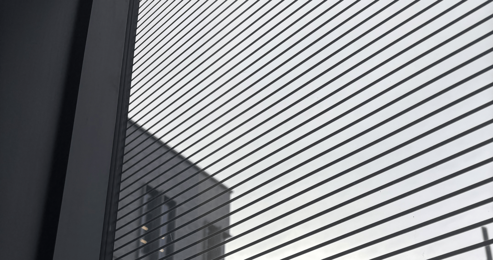
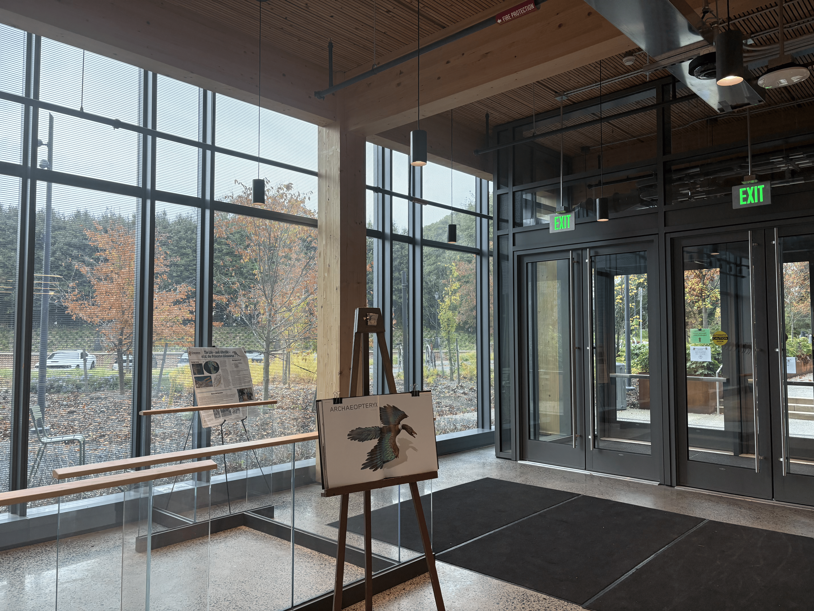
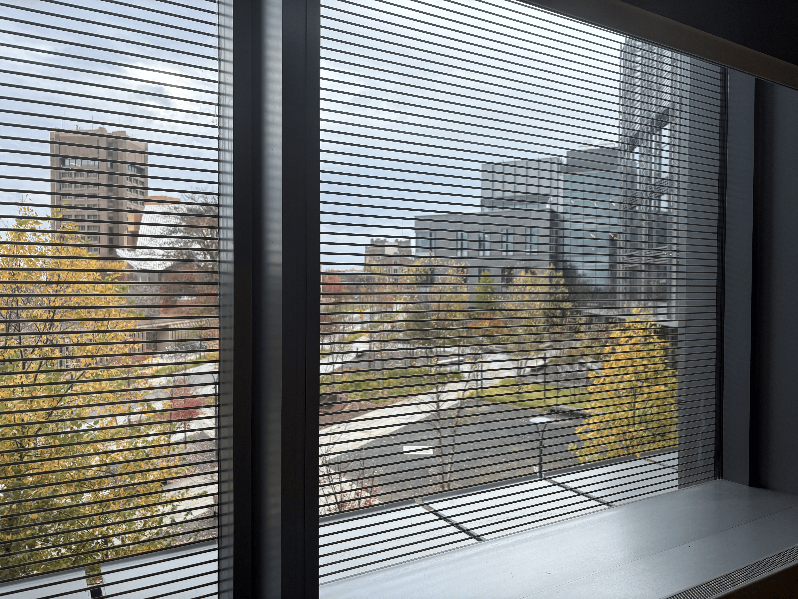
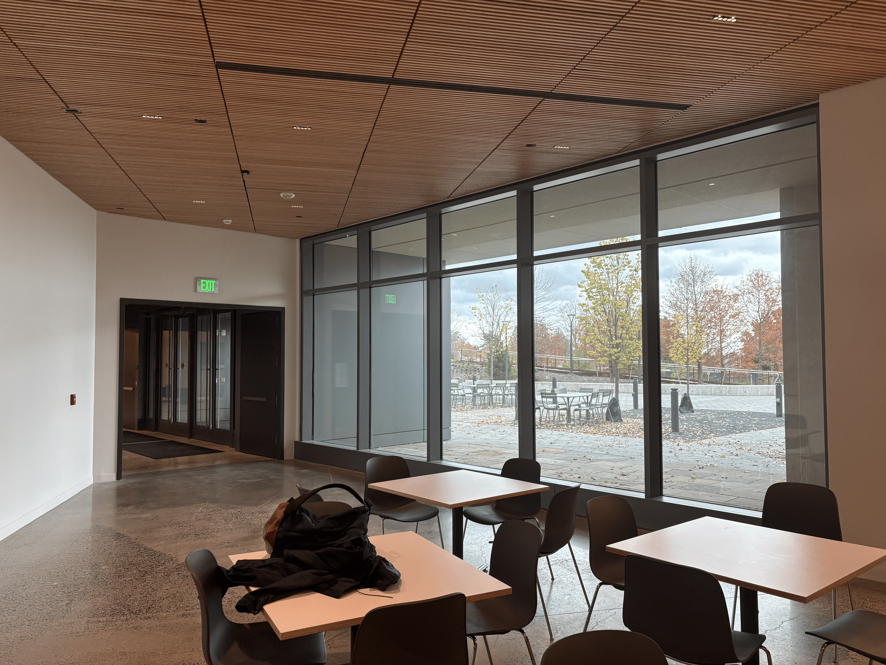
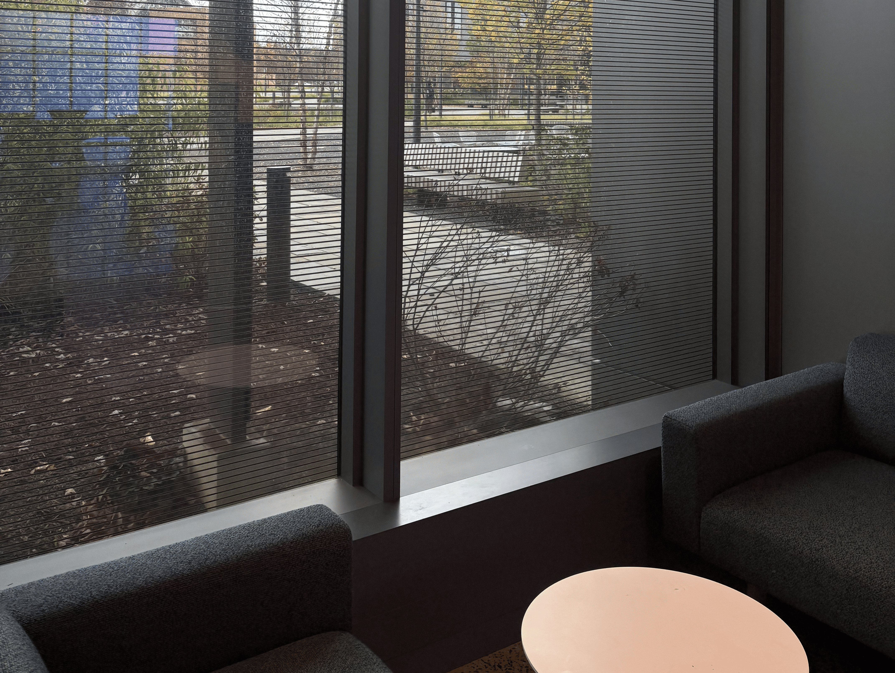
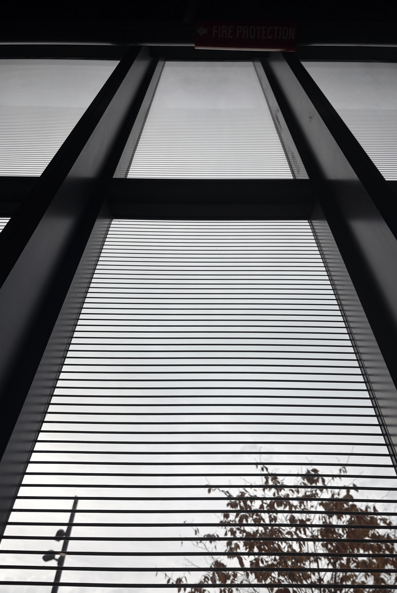
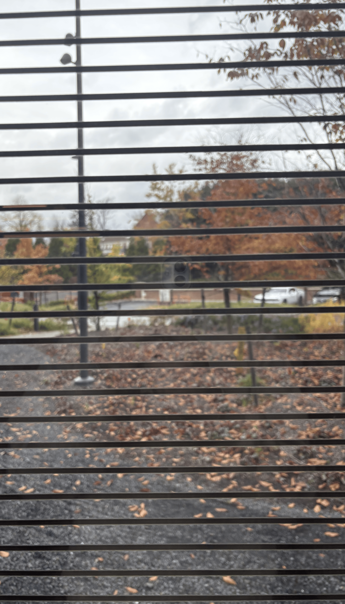

Bird-Friendly Windows
Some windows in Briger Hall have dark horizontal lines across the glass. Have you ever wondered why?

Find it
Windows are on every floor of Briger Hall and a majority are patterned.Here are some recognizable locations within Briger Hall which have patterned windows!



Look closely: Find a window with lines and a window without. Compare the reflections in each. Try stepping back to see if the location of the window is clearer for patterned windows verus not (what if YOU were a bird?).
Why is it interesting?
Our observation: Not all windows in Briger Hall have dark lines, suggesting that their placement is intentional.

A key environmental feature of the windows in Briger Hall is the use of dark horizontal lines across the glass to prevent bird collisions. Birds often cannot distinguish transparent glass from open space, so reflections of trees and the sky can make windows appear like natural habitats and cause birds to collide with the glass. Visible patterns help birds recognize windows as physical barriers and avoid flying into them. [1]
Princeton’s Stoddard Lab launched the “Princeton Better for Birds Project” in 2022 to make campus safer for birds. According to the Stoddard Lab, Princeton has more than 200 bird species, many of which migrate through the area during the spring and fall. In 2022, dotted film was applied to Prospect House’s dining room windows to help prevent collisions. [1]
According to the Cornell Lab of Ornithology, North American bird populations have declined by nearly 30% over the past 50 years, and collisions with glass buildings are a major threat. [2]What if / What might change?
Hypothetical alternative:
Normal windows lacking these patterns.
For the environment: Birds would have a harder time recognizing the glass as a physical barrier. They might mistake reflections of trees and the sky for open space, increasing the likelihood of collisions, injuries, and deaths. This would be especially harmful during spring and fall migrations. Over time, these collisions could contribute to declining local bird populations and reduced biodiversity. [2]
For people: Removing the markings would provide clearer, unobstructed views, but it would also undermine Princeton’s bird conservation efforts. The markings also make Princeton’s sustainability efforts visible to students and visitors. Installing and maintaining them requires resources, but they offer a fairly simple way to reduce the environmental impact of campus buildings without replacing entire windows.


Show how you know
- Stoddard Lab. Princeton Better for Birds Project — The Stoddard Lab. Supports the collision mechanism, the 2022 project, campus bird species, and the Prospect House film.
- Cornell Lab of Ornithology. Nearly 3 Billion Birds Gone. Supports the population decline and glass collisions as a threat.
Listen and look
Read the complete audio transcript
Look at the windows on the west and north sides of Briger Hall. They have dark horizontal lines across the glass.
Birds often cannot distinguish transparent glass from open space. Reflections of trees and the sky can make windows appear like natural habitats and cause birds to collide with the glass. Visible patterns help birds recognize windows as physical barriers. According to the Cornell Lab of Ornithology, North American bird populations have declined by nearly thirty percent over the past fifty years, and collisions with glass buildings are a major threat.
Princeton’s Stoddard Lab launched the Princeton Better for Birds Project in 2022. According to the lab, Princeton has more than two hundred bird species, many of which migrate through the area during the spring and fall.
Now consider normal windows without these patterns. Birds might mistake reflections for open space, increasing the likelihood of collisions, injuries, and deaths, especially during migration. Removing the markings would give people clearer views, but it would undermine Princeton’s bird conservation efforts. Installing and maintaining the markings requires resources, but they are a fairly simple way to reduce the environmental impact of a building without replacing entire windows.